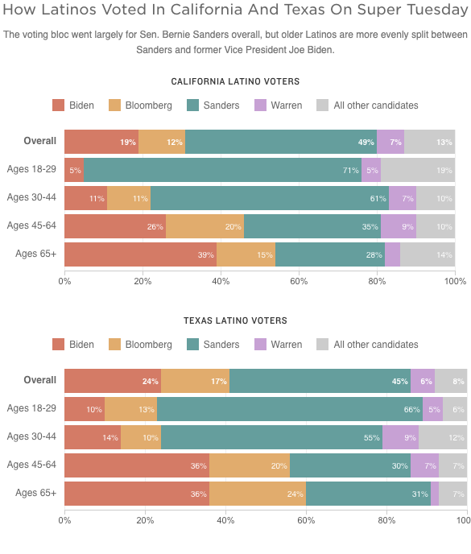

aria-label="<%- COPY.labels.screenreader %>"
<% } %>
>
<%= t.smarty(COPY.labels.headline) %>
<%= t.smarty(COPY.labels.subhed) %>
<% if (COPY.labels.type) { %>
<%= t.smarty(COPY.labels.type) %>
<% } %>
<% if (COPY.labels.type2) { %>
<%= t.smarty(COPY.labels.type2) %>
<% } %>
